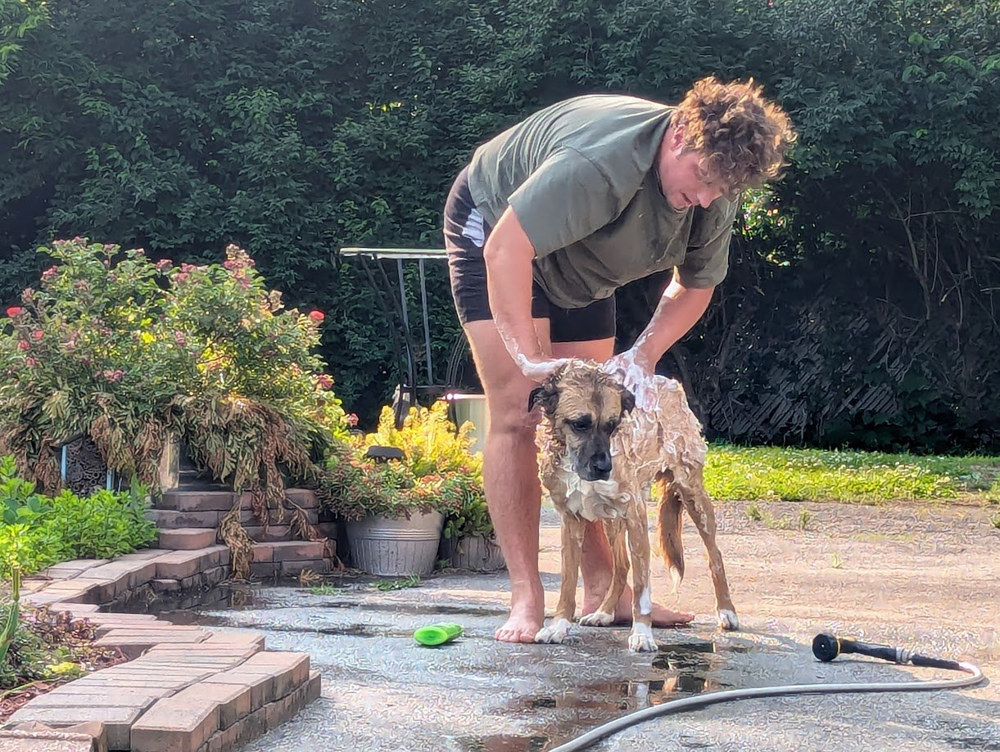

About Trail Blogger Hello! My name is Nathaniel. Trail Blogger is a personal hiking journal I built to document my trail adventures and preserve memories from the places I explore. I wanted a simple, ad-free platform where I could store GPS tracks, photos, and hiking notes without relying on third-party services or dealing with subscription fees.

I built this because I kept forgetting which trails I'd done and which ones I wanted to try. I'd come back from a hike and think "this was great, I should remember this," but a few months later I couldn't recall the details. Writing down where, when, and what I thought about helps me actually remember these places.
Having GPS tracks means I can see exactly where I went, and the photos help me remember what the trail actually looked like, not just what I think I remember.
How it works
Everything you see is plain files in a git repository: one GeoJSON file of hikes, one of wishlist trails, and a folder of photos. The site is static and works offline once loaded. I add hikes by recording them on my phone or importing a GPX file, on a small local editing server, then push to GitHub.
The code is open source at github.com/RealCaddish/trailBlogger . Trail outlines in the wishlist come from OpenStreetMap .
Contact · Portfolio · GitHub